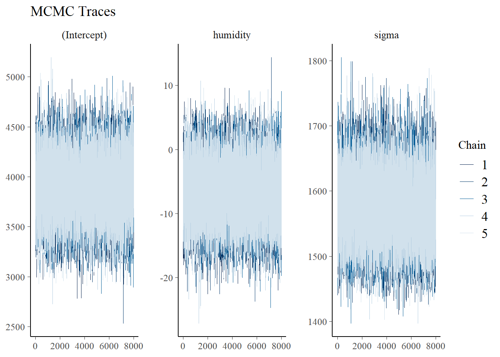

library("bayesrules")
library("broom.mixed")
library("rstanarm")
library("tidyverse")
data("bikes")Problem Set 7 Solutions
9.9
a
\[\begin{array}{rcl} Y_{i}|\beta_{0}, \beta_{1}, \sigma & \sim & N(\mu_{i}, \sigma^{2}) \text{ with } \mu_{i} = \beta_{0} + \beta_{1}X_{1} \\ \beta_{0} & \sim & N(5000, 2000^{2}) \\ \beta_{1} & \sim & N(10, 5^{2}) \\ \sigma & \sim & \text{Exp}(1/2000) \\ \end{array}\]
b
bike_humidity_model <- rstanarm::stan_glm(
rides ~ humidity, data = bikes,
family = gaussian,
prior_intercept = normal(5000, 2000^2),
prior = normal(10, 5^2),
prior_aux = exponential(1/2000),
prior_PD = TRUE,
chains = 5, iter = 8000*2, refresh = 0, seed = 84735)9.10
a
bikes |>
ggplot(aes(x = humidity, y = rides)) +
geom_point() +
labs(title = "Capital Bikeshare",
subtitle = "ridership versus humidity",
caption = "SML 320") +
theme_minimal()b
Yes, the normal regression model is probably appropriate for use
- the observations—the bike riders—are probably independent from each other
- the plot implies that a linear model can be useful
- the plot seems to show consistent variability around the local mean (besides the rare days with very low humidity)
9.11
a
bike_humidity_model <- rstanarm::stan_glm(
rides ~ humidity, data = bikes,
family = gaussian,
prior_intercept = normal(5000, 2000^2),
prior = normal(10, 5^2),
prior_aux = exponential(1/2000),
prior_PD = FALSE,
chains = 5, iter = 8000*2, refresh = 0, seed = 84735)b
bayesplot::mcmc_trace(bike_humidity_model, size = 0.1) +
labs(title = "MCMC Traces")
The trace plots do not show anything odd.
bayesplot::mcmc_dens_overlay(bike_humidity_model) +
labs(title = "Density Plots")The density plots are consistent with each other.
bayesplot::mcmc_acf(bike_humidity_model) +
labs(title = "Autocorrelations")Warning: The `facets` argument of `facet_grid()` is deprecated as of ggplot2 2.2.0.
ℹ Please use the `rows` argument instead.
ℹ The deprecated feature was likely used in the bayesplot package.
Please report the issue at <https://github.com/stan-dev/bayesplot/issues/>.The autocorrelation plots drop off quickly (as expected with Markov chains).
bayesplot::neff_ratio(bike_humidity_model)(Intercept) humidity sigma
1.046500 1.050025 1.006525 Each of the effective sample size ratio values are over 0.10 (as recommended).
bayesplot::rhat(bike_humidity_model)(Intercept) humidity sigma
0.9999395 0.9999702 0.9999684 Each of the split-R-metric values are close to 1.0 (as recommended).
9.12
a
broom.mixed::tidy(bike_humidity_model,
effects = c("fixed", "aux"),
conf.int = TRUE, conf.level = 0.95) |>
mutate_if(is.numeric, round, digits = 4)# A tibble: 4 × 5
term estimate std.error conf.low conf.high
<chr> <dbl> <dbl> <dbl> <dbl>
1 (Intercept) 3901. 293. 3325. 4483.
2 humidity -6.60 4.47 -15.4 2.22
3 sigma 1574. 50.3 1480. 1678.
4 mean_PPD 3482. 99.9 3287. 3680. b
With the estimate, the model indicates that for each percentage point increase in humidity, the number of riders decreases by 7.
c
Since the credible interval for the humidity variable contains zero, we do not have evidence of a negative association between ridership and humidity.
9.13
a
bike_model_df <- as.data.frame(bike_humidity_model)
bike_predict_df <- bike_model_df |>
mutate(mu = `(Intercept)` + humidity*90,
y_new = rnorm(40000, mean = mu, sd = sigma))
bike_predict_df |>
summarize(lower_mu = quantile(mu, 0.1),
upper_mu = quantile(mu, 0.9),
lower_new = quantile(y_new, 0.1),
upper_new = quantile(y_new, 0.9)) lower_mu upper_mu lower_new upper_new
1 3130.082 3484.728 1275.042 5343.964b
bike_humidity_predictions <- rstanarm::posterior_predict(
bike_humidity_model, newdata = data.frame(humidity = 90)
)
rstanarm::posterior_interval(bike_humidity_predictions, prob = 0.80) 10% 90%
1 1296.219 5321.24510.13
data("coffee_ratings")
coffee_ratings <- coffee_ratings |>
select(total_cup_points, aroma, aftertaste, farm_name) |>
filter(total_cup_points > 0) #outlier removal
cor(coffee_ratings$aroma, coffee_ratings$aftertaste)[1] 0.6942922The strong correlation between aroma and aftertaste hints that the variables might not be independent.
10.14
a
coffee_ratings |>
ggplot(aes(x = aroma, y = total_cup_points)) +
geom_point() +
labs(title = "Coffee Ratings",
subtitle = "predictor: aroma",
caption = "SML 320") +
theme_minimal()
b
coffee_aroma_model <- rstanarm::stan_glm(
total_cup_points ~ aroma, data = coffee_ratings,
family = gaussian,
prior_intercept = normal(75, 10^2),
chains = 4, iter = 5000*2, refresh = 0, seed = 84735)c
broom.mixed::tidy(coffee_aroma_model,
effects = c("fixed", "aux"),
conf.int = TRUE, conf.level = 0.95) |>
mutate_if(is.numeric, round, digits = 4)# A tibble: 4 × 5
term estimate std.error conf.low conf.high
<chr> <dbl> <dbl> <dbl> <dbl>
1 (Intercept) 38.0 1.28 35.4 40.5
2 aroma 5.83 0.168 5.50 6.17
3 sigma 1.96 0.0373 1.89 2.03
4 mean_PPD 82.2 0.0755 82.0 82.3 d
For every point increase in the aroma score, the total_cup_points increases by about 6 points.
e
Since the credible interval around the aroma variable does not contain zero, we have some evidence that there is a positive relationship between the aroma score and the total_cup_points
10.15
bayesplot::pp_check(coffee_aroma_model, nreps = 50) +
labs(title = "Posterior Predictive Check",
subtitle = "Model: total_cup_points versus aroma",
caption = "SML 320")b
The density plots in the posterior predictive check do not seem to align with the data, so perhaps the assumptions of a linear relationship or consistent variance are faulty.
10.17
a
coffee_aroma_model_cv <- bayesrules::prediction_summary_cv(
model = coffee_aroma_model, data = coffee_ratings, k = 10
)b
coffee_aroma_model_cv$cv mae mae_scaled within_50 within_95
1 0.8639043 0.4403785 0.6905734 0.9596342- The median absolute error tends to be about 0.8767
- The scaled median absolute error tends to be about 0.4478
- Surprisingly, about 69 percent of the observed values fall within the 50 percent posterior prediction interval.
- About 96 of the observed values fall within the 95 percent posterior prediction interval.
10.19
a
coffee_aftertaste_model <- rstanarm::stan_glm(
total_cup_points ~ aftertaste, data = coffee_ratings,
family = gaussian,
prior_intercept = normal(75, 10^2),
chains = 4, iter = 5000*2, refresh = 0, seed = 84735)b
bayesplot::pp_check(coffee_aftertaste_model, nreps = 50) +
labs(title = "Posterior Predictive Check",
subtitle = "Model: total_cup_points versus aftertaste",
caption = "SML 320")The density plots in the posterior predictive check do not seem to align with the data, so perhaps the assumptions of a linear relationship or consistent variance are faulty.
c
coffee_aftertaste_model_cv <- bayesrules::prediction_summary_cv(
model = coffee_aftertaste_model, data = coffee_ratings, k = 10
)
coffee_aftertaste_model_cv$cv mae mae_scaled within_50 within_95
1 0.6698037 0.4273558 0.6875772 0.955886Here, the median absolute error values (scaled and unscaled) are lower for the aftertaste model than the aroma model. Furthermore, the density plots in the posterior predictive check are slightly better for the aftertaste model than the aroma model. Therefore, if we had to use only one predictor variable, the aftertaste data seems to be the better choice.